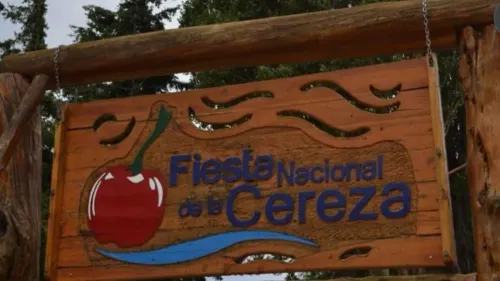

Fiesta Nacional de la Cereza
Los Antiguos, Santa Cruz

Información Detallada
Cada enero, la pintoresca villa de Los Antiguos (Capital Nacional de la Cereza) celebra la cosecha fina de la fruta dulce producida en sus fértiles chacras a orillas del Lago Buenos Aires.
Atracciones Tradicionales
Incluye jineteadas gauchas, domas, venta de dulces artesanales, repostería regional y peñas folclóricas.